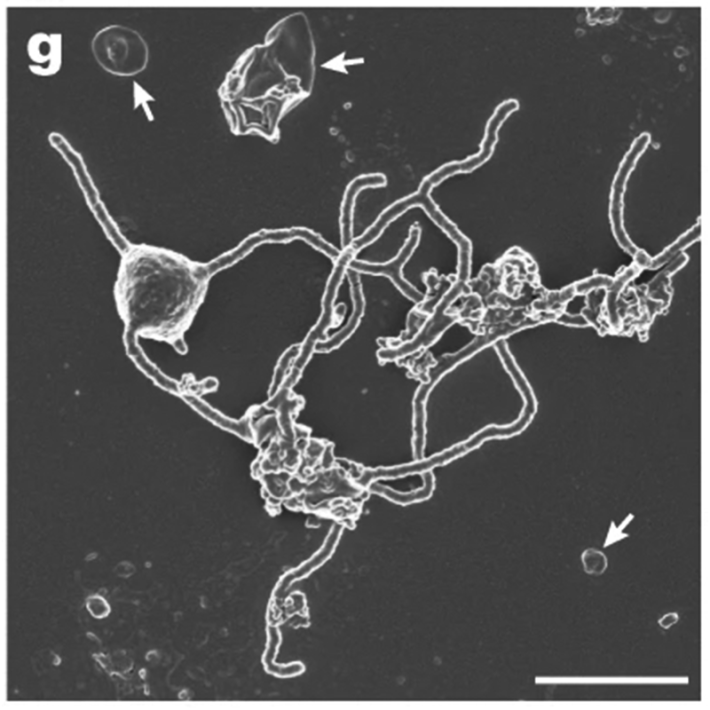

In 2008, I found myself sitting at the bottom of the ocean, in the Sea of Cortez in Mexico, more than a mile deep, in the Alvin submersible. The very vehicle that was used to discover the first hydrothermal vent, the Alvin is the only human-occupied deep submergence vehicle in the United States scientific fleet—it was also used to discover the wreck of the Titanic—and it handles extreme pressure with grace. At the time of my dive, Alvin could’ve plunged to twice the depth of our mission without a problem. Due to recent upgrades, it can now go even a mile deeper than that.
After working our way through loads of checklists and shutting the hatch, we were yanked off the ship’s deck by the A-frame and then nestled into the water. I sat cross-legged, but blissfully upright, in a sphere with two-inch-thick titanium walls, mere inches from the pilot, Sean Kelley, and my advisor, Andreas Teske, each with our own porthole.
The bioluminescent lights were stunning as we dropped like a stone through a mile of seawater. When we released ballast and the seafloor came into view, I felt like I had gone to another world. Water shimmered all around us as the heat from the hydrothermal vents rose from the seafloor. I pressed my face close to the acrylic porthole but tried not to touch it. The pilot in charge of keeping the portholes pristine, Dave Walter, had warned me not to bring it back to the surface smudged. On the other side of the porthole was a seething mass of gigantic worms. Each worm was roughly as tall as me with a white body the diameter of a garden hose and a bright red head like a feather duster. The worms radiated from every hard surface in chunky bouquets. I knew that I was one of only a few hundred people who have ever seen worms like these up close, so I inched my greasy nose closer to Dave’s precious acrylic window.
These cells were only about as wide as a wavelength of blue light.
My job was to make sure we completed our scientific objectives, documenting our work with written notes and video from Alvin’s external cameras. In my spare moments, I filmed the fantastic worms as they sipped chemicals from the scalding fluids. But these animals don’t use the chemicals directly. They funnel them to bacteria that live inside their bodies and these bacteria turn the chemicals into food for the worm. We humans often take probiotic supplements to keep our gut microbes healthy. These giant worms, known as Riftia, take this notion to the extreme. Over the course of evolution, they cast aside their mouths, stomachs, and butts so they could depend on the microbes for everything. Now they just have a special organ called a trophosome packed with sulfur-oxidizing-microbes.
I was not, however, at the bottom of the sea to study the worms, as cool as they were. No, I was hoping to catch something much older—something stretching back to the origin of multicellular life itself. When I completed the dive and returned to the lab in Chapel Hill, North Carolina, with the hydrothermal vent samples in hand, I was stunned by what I eventually found in them. I pulled out DNA, sequenced it, and immediately encountered a dilemma. As I hammered away on my computer, trying to identify these sequences based on their similarity to known DNA sequences, one set of sequences refused to fit nicely into any category.
Try as I might, I could not make a phylogenetic tree that placed these DNA sequences reliably into one of the archaea, bacteria, or eukaryotes. At the time I was doing this work, all known life on Earth fell into one of these three groups, so my first thought was that I was a terrible scientist, and I was screwing up the algorithm somehow. Instead, it turned out that I had stumbled onto an organism much stranger than I had expected.
I started combing the scientific literature to see if other people had found these strange DNA sequences, too. They had been found in other deep-sea hydrothermal vents and other subsurface locations, but because this microbial group was uncultured, it did not have a proper name. Costantino Vetriani at Rutgers University named it Marine Benthic Group B (MGB-B). Fumio Inagaki at JAMSTEC named it the Deep-Sea Archaeal Group. Ken Takai at JAMSTEC named it the Marine Hydrothermal Vent Group. Katrin Knittel at the Max Planck Institute for Marine Microbiology in Germany decided to try and take its picture.

FIREPOWER: Scientistsnamed this recently discovered organism Prometheoarchaeum syntrophicum, after Prometheus, the Greek god who forged humans out of mud and gave them fire. It’s a fitting name if the mysterious creature is indeed the progenitor of all eukaryotic life and gave us mitochondria, which provide fuel to all living cells. Credit: Chhandama / Wikimedia Commons.
Taking a microbe’s picture is harder than it sounds. Sure, if you have a nicely growing culture, you can smear it across a glass slide, stain it, stick it under a microscope, and snap a picture. But if you’re trying to discover a new mysterious group of microbes at the bottom of the ocean that refuse to grow in a petri dish, the task is more difficult. When you smear fresh mud across a microscope slide, the cell stain does not distinguish one type of microbe from another—a significant problem since there are billions of different types of microbes in each gram of sediment.
To overcome this obstacle, Katrin went to a computer and lined up the 16S rRNA gene sequences from this strange MBG-B/DSAG/MHVG against those of all other bacteria and archaea known at the time and picked out an 18-nucleotide section that only matched this one group. She then attached a fluorescent probe to these little 18-nucleotide stretches of DNA and then swished it around in the seafloor muck. Somehow these bits of DNA probes found their targets: They glommed on to the MBG-B/DSAG/MHVG cells and made them glow, giving Katrin and her colleagues the first glimpses of these mysterious beings.
As the scientists peered into the microscope, the first thing they noticed was that these cells were extremely small; they were only about as wide as the wavelength of blue light (550 nanometers). But the most important thing about them, the thing that may be extremely consequential for our own existence, is that they formed globby aggregates with other cells. In any other type of microbe, the tendency to form aggregates is not earth-shattering. But these were not normal microbes. These were not-bacteria, not-quite-archaea, and not-quite-eukaryotes. They were on the edge of the known tree of life. To understand why this is so important—why the clumping together of these specific cells made pulses race—you need to know a bit about the very deep history of our branch on the tree of life, the eukaryotes.
One of the defining features of eukaryotes is that we have microscopic organelles inside our cells called mitochondria. These mitochondria take electron-rich food molecules (harvested by our guts and passed along through our blood) and react them with oxygen (brought by our blood from our lungs) to generate ATP, the primary source of energy for all living cells. But our mitochondria are not really “us”—they are ancient bacteria that for mysterious reasons ended up inside an early eukaryotic cell. Then they stayed so long they became permanent residents. We couldn’t do anything we like to do without our little mitochondrial interlopers. Listen to music, form a thought, read a book, or produce body heat—they help us do it all. And the same is true for every animal on the planet.
It’s hard to identify our “great-grandma” by just one gene and a handful of pictures.
How did this association start between early eukaryotes and the bacteria that later became mitochondria? Fortunately, we have tons of data about the ancient Alpha-proteobacteria that turned into mitochondria. Unfortunately, we know almost nothing about the ancient cell that was their original host.
As I sat in my windowless room as a graduate student just back from the Sea of Cortez, trying unsuccessfully to force computer algorithms to tell me what the heck these microbes were, I may have been looking at some of the first-known direct descendants of that host that eventually evolved into humans. This is why people were so gob-smacked by these boringly named MBG-B/DSAG/MHVG microbes. What if they retained some of the properties of that first step toward eukaryotic life on Earth?
This is also why it was so enticing when Katrin Knittel showed us that these microbes form little clusters with other cells. Maybe these microbes’ penchant for huddling together led to some of them forming a relationship with Alphaproteo-bacteria and starting along the pathway to becoming what we are today. But it’s hard to identify our “great-grandma” by just one gene and a handful of pictures. Unfortunately, that’s literally all we had to go on for almost two decades.
Then, in 2015, Anja Spang and Thijs Ettema at Uppsala University in Sweden made the first whole genomes of these mysterious organisms. To the gratitude of scientists like myself, they gave them a name that was not an acronym: Lokiarchaeota, after the hydrothermal vent called Loki’s Castle (a nod to the Norse god Loki) where they were found. When these researchers lined Lokiarchaeota’s genome up against those of other organisms, they found that they were surprisingly close to our lineage, the eukaryotes. The fact that they are so closely related to us suggests that they may truly be direct descendants of our ancient progenitor cells.
These researchers also found some things in the genome that had never been seen in a prokaryote before. One of the key features that separates eukaryotes (humans, plants, fungi, and so on) and prokaryotes (bacteria and archaea) is that we eukaryotes can move things around on little conveyor belts inside our cells with special proteins. Lokiarchaeota have genes that encode those proteins, which is another clue that they belong on our team. The researchers also found genes suggesting they might have passed hydrogen back and forth with an endosymbiont (maybe a proto-mitochondria), as well as external structures that would help them hang on to their Alphaproteobacterial friend.
To learn more about these promising creatures and their internal structures, scientists needed better images of them. But the only way to do this would be to grow Lokiarchaeota in a culture. Despite all the cultures people had made from hydrothermal vents, Lokiarchaeota had never been among them.
The effort to culture Lokiarchaeota started way back in 2006. Hiroyuki Imachi and his colleagues at the JAMSTEC decided to try a new approach to growing them. They built a special closet-sized chamber threaded with little pieces of sterilized kitchen sponges hanging along a nylon string. They soaked these sponges in fluids from a deep-sea hydrothermal vent off the coast of Japan. Then they dripped growth media slowly onto the top sponge. Once the first sponge was saturated, the liquid dripped excruciatingly slowly down to the next sponge and so on. Then they waited, patiently. Fourteen years later, in 2020, Hiroyuki and his coauthors reported the first culture of Lokiarchaeota,which they were able to photograph in high resolution.
The results delivered the kind of storybook ending that scientists dream about: It turns out that there are large appendages protruding out of each little Lokiarchaeota cell. If you use your imagination, you can just imagine these cells using their armlike thingies to tangle up an Alphaproteobacterial cell, engulf it—and eventually evolve into a human or a giraffe.
The team named the new organism Prometheoarchaeum syntrophicum, after Prometheus, the Greek god who forged humans out of mud and gave them fire—a fitting name if we guessed right about it being the progenitor of all eukaryotic life and giving us mitochondria, the firepower of life on Earth. 
This article is an excerpt from Intraterrestrials: Discovering the Strangest Life on Earth, copyright 2025, published by Princeton University Press and reprinted here by permission.
Lead image: Gallwis / Shutterstock